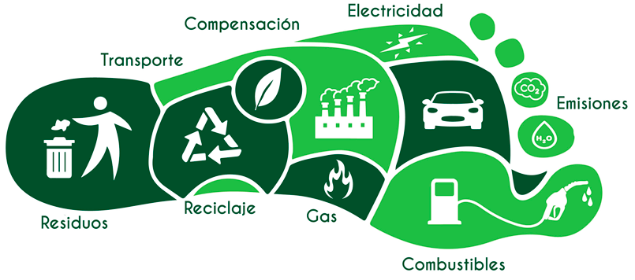

<ion-header>
  <ion-toolbar color="success">
  	<ion-buttons slot="start">
      <ion-back-button
        style="padding-left: .4em"
        text=""
        defaultHref="/inicio"
      ></ion-back-button>
    </ion-buttons>
    <ion-title>Informacion</ion-title>
  </ion-toolbar>
</ion-header>

<ion-content>
	<div class="fondo1 fondoImagen">
	
		<ion-card>
		  <ion-card-header>
		    <ion-card-title>Huella de Carbono</ion-card-title>
		  </ion-card-header>

		  <ion-card-content>
		    La Huella de Carbono cuantifica la cantidad de gases de efecto invernadero, los cuales impiden que la radiación solar pueda salir de la atmosfera, provocando que la temperatura del planeta aumente.
		    
		  </ion-card-content>
		</ion-card>

	</div>


</ion-content>
